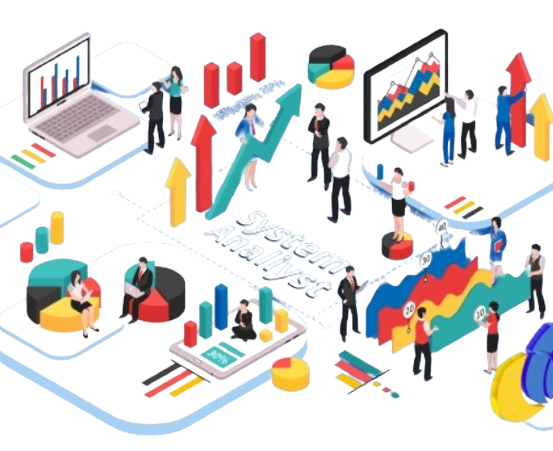

System Analyst
I analyze digital products and brand experiences
We believe that good design can lead to higher conversions, increased sales, and building customer loyalty.

We believe that good design can lead to higher conversions, increased sales, and building customer loyalty.
I am a systems analyst experienced in analyzing business needs, designing information technology solutions, and managing software development projects. With extensive expertise and understanding of business systems and processes, I aim to improve operational efficiency and effectiveness through the implementation of appropriate technology solutions.
As a systems analyst, we emphasize skills that enable us to confidently tackle technical and business challenges. Here are some of our key skills :
Please look at my resume, all my education, experience, work and other useful things I have done
As part of our ongoing efforts to optimize our business processes and leverage technology to drive efficiency and innovation, I am assigning you, our esteemed systems analysts, with a critical task. Your assignment is to analyze our current systems and processes, identify areas for improvement, and propose innovative solutions that align with our strategic objectives.

Overall, I want to commend you for your outstanding performance as a systems analyst. Your contributions have been instrumental in driving our organization's success, and I look forward to seeing your continued growth and development in this role. Please do not hesitate to reach out if you have any questions or if there is anything I can do to support you further. Keep up the excellent work!
Tokopedia
Here are some of the projects I've done.
a professional who writes and tests code so that computer programs and applications run smoothly.
Learn Moresomeone who coordinates, plans, and leads IT-related activities in an organization
Learn More